LEVEL PLANNING / DESIGN
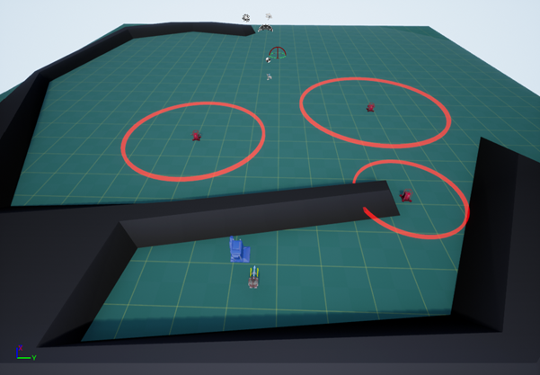
The first thing I did to start working on planning out my blaster level was to experiment in the framework and learn the functionality of the different elements, particularly the different enemy types. It also helped me to get a grasp on how the tank controlled, allowing me to better design the level around the controls of the level.
I began to quickly brainstorm some ideas in the limitations of the framework. I knew I couldn't have any changes in height as it would cause camera issues, and I also set myself the limitation of not increasing the size of the default plane, to stop the level from becoming overly big.
To help generate ideas for the level, I first looked at the player speed to give me an idea of what I scale I should be working within. After some timing, I determined that they move through one of the 200-unit square in just under a second. After that, I decided which enemies would be the most ‘deadly’ to the player to allow for better placement and difficulty scaling through the level.
To start with, I quickly sketched down some basic level ideas in Photoshop as a pixel map, imagining how I might want to have the level fully designed when transitioning into 3DS Max. The original design I created was made up of multiple smaller rooms connected by corridors, similar to how the level was laid out in the Peril level. I highlighted the map in red where I thought potential enemy locations could be. After thinking over the design for a while, I decided to create a level layout that was shaped more interestingly and had more interesting features than just square rooms.
For my second design, I took elements from the first one, keeping some of the room designs. I reiterated the shaping of the level looping around in a sideways U-shape, but instead I created a spiral so the level fully looped in on itself. I also shaped some of the areas such that not everything was completely squared to the grid. Because I will be greyboxing out the level in 3DS Max, it allows me to create more interesting designs to the level, and add some more unique features to the level. After creating the pixel map, the final change came when I realised I needed to rotate the whole level by 90° so the tank can start with the correct rotation. Finally, before moving into 3DS Max, I quickly created a bubble map for how I originally wanted the level to flow. It was useful to have as it allowed me to structure my ideas better, and was a useful comparison tool when the level itself was finished.
On the pixel maps, the black represents walls, red represents enemies, and the yellow and green are the start and end respectively.
Pixel Map Ideas
Level Bubble Map
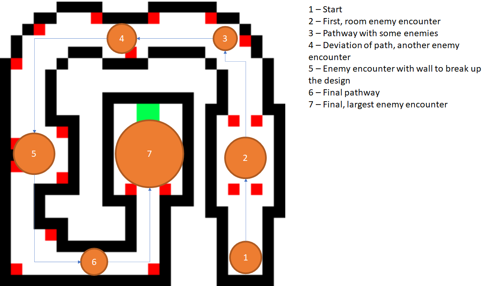3DS Max Blockout
Firstly in Max, I wanted to create a basic layout for the first few rooms and import them into UE4 to get a better sense of the scale I’d be working with and make sure I was having no issues moving the assets between the two software. Thus, I put together a few basic shapes somewhat resembling my design and imported them into the UE4 project.
Testing Blockout in 3DS Max and Unreal Engine 4
After some quick playtesting, I found the level scaling from the original plan to work well in-engine, as there is enough room to have enemy fights while not being too large such that the player cannot see anything. Thus, I hid the two test objects from view and began to work on the first proper iteration of my level in Max, considering opportunities to tweak and change parts of the design with me longer being confined to the pixel grid. To give myself a better reference, I created a new plane that had the level pixel map as a material so I could have an image reference to work from. So I could actually build the level easier, I decided to break up the level into multiple parts allowing for changes to be made where needed and to avoid mistakes needing me to restart the process over again.
After spending some time building the blockout of my plan in 3DS Max, I had the assets ready to import into UE4, allowing me to start adding in the enemies and playtesting my level design.
At first, I added enemies into the areas I had marked out on the pixel map, just to test their positioning in the level. For playtesting purposes, I activated the framework's telemetry system to get an idea of how the gameplay was flowing.
Level Iteration 1
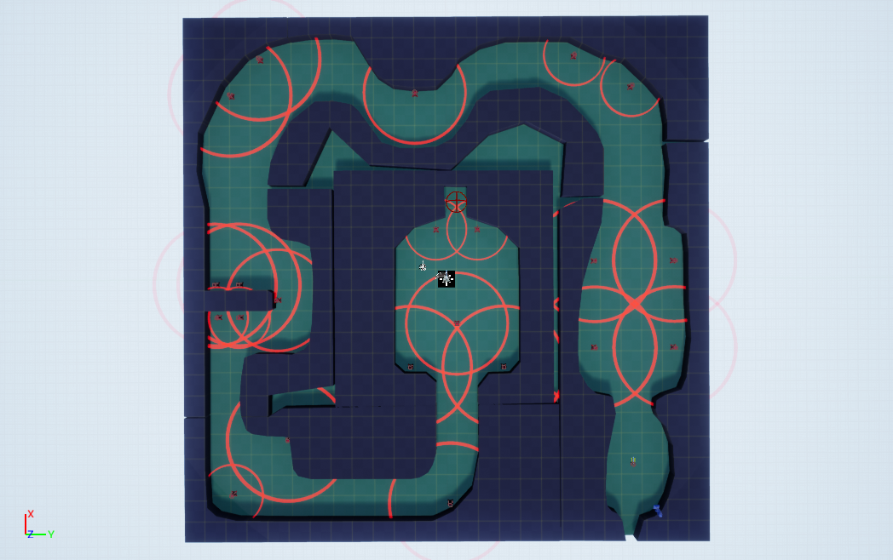Iteration 1 Analysis
After multiple playthroughs of the first iteration of my level, I found the level to be quite challenging in certain places, particularly due to enemy placement; I found myself dying multiple times while trying to get through the level.
The telemetry of my level gives a better insight into how the level is playing, and what might need to be changed about it. The first glaring issue is the concentration of activity on the left with the large black spot. In my original pixel map plans, I placed multiple enemies around this point, to act as a sorts of midpoint challenge for the player, before moving on to the rest of the level and the final battle before the level end. However, this proved to make that part of the level too concentrated in activity, affecting the pacing of the level.
In my next iteration of the level design, I’ll change the enemy placement to make it easier for the player and to better space out the spots throughout the level to avoid long sections of nothing happening for the player. By altering the design of the level this way, it will help to get rid of my fears of the level being too large, as the player is given more to do in the level itself. To do this, I want to alter the designs of the ‘rooms’ to have them better accommodate enemies such that it improves the level’s pacing. For example, with the first room (the one on the right) I want to shrink it slightly to give the player a better view of the entire level, and I also want to add some features in the room itself like walls to cover behind, helping to break up the design and make the room more interesting while showing the player that they can hide behind cover to avoid being hit by enemies.
To try and alleviate the difficulty issues some parts of the level have, I’m going to change the types and placements of some of the enemies. Right now, I make use of 3 of the lightning enemies which I find the hardest enemy type to deal with by far, so my plan is to only use the one in the final room as a final challenge for the player to overcome at the end of the level.
LEVEL ITERATION 2
With my approach to creating this iteration, I decided to have the newer parts I added more adhere to the grid, putting more of a focus onto the gameplay side rather than the more decorative approach that I'll switch to once I’m happy with how the level plays.
One idea I came up with to present the player with a harder level should they want it was to have a lightning enemy available as an optional challenge, set up as a branching path. It helps to make the level design more interesting as the entire level isn't just one straight path to the end, and it allows the player to choose the challenge they want. To get the circle right, I mapped out the range of the lightning enemy in relation to the pixel map, and then created some covers and walls around the enemy. The lightning enemy is one that is very difficult to safely take down, so it works especially well for this sort of optional challenge.
To avoid getting another black dot on the telemetry of my level, I changed the design through the corridor to give more spots to spread out enemy placement, pacing the level better while still keeping the challenge of that portion of the level. I made use of some enemies further up the corridor, having them embedded in the walls so that the player isn't overwhelmed by shooting straight away.
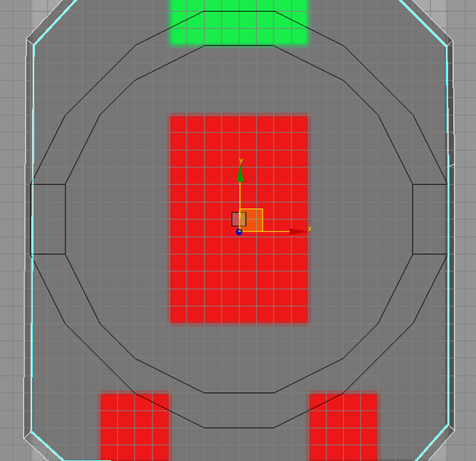
To alter the design of the final room, I used to cover to split it into ‘sections’ to focus the player on set enemies at a time and cut down the large empty spaces the room had in the first iteration. As it is the final part of the level, I wanted to force the player to fight the lightning enemies; to do so I made use of the covers I had made for the optional fight and repurposed them to block the player from going around the attack radius of the enemy. To start, I reused the border I’d created that signals the range of the lightning enemy, and reused the tank reference to show the position the enemy will be in. To start with, I just plan to place cover as a border for the range, but I’ll add more cover options should I still find it too difficult to fight.
After putting together all the elements that I wanted to change in the 3DS Max blockout, I imported it into UE4 and gave the level some more playtesting, paying attention to see how my changes had affected the level.
Level Iteration 2
To hide the first iteration I made, I put them on a sublevel that is set to activate only by blueprint, meaning that none of the original level is actually generated upon play. The first thing I did after importing into UE4 was test the lightning covers, to make sure they were working as I intended them to. The first, optional one worked as intended and only activated once the player went within the borders of it. However, the second one needs to be altered, as the lightning ignores any cover in its path. Because I shrank the border slightly to try and create an effect of the lightning continuing through the gaps, it will need to be extended similarly to the one in the optional fight.
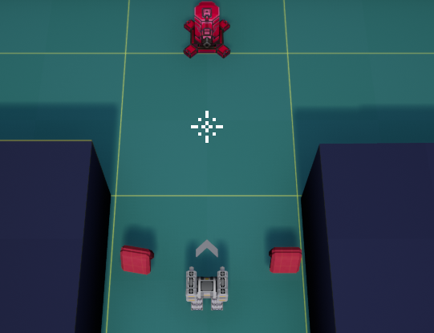
After this, I placed the enemies in how I wanted them to go. To signify how enemies react to the player, I want to make it obvious how large each enemy’s range is the first time the player encounters one of each type. For the lightning enemies, I already have the borders in place. Because I am using the machine guns as the first enemy the player encounters (as they are what I find to be the weakest of the three in the framework), I set up the first obstacle in a way that uses the affordance meshes to clue the player on what is going to happen in the level.
The utility boxes act as danger signs, which are put at the end of the enemy’s detection range. As I am moving up into the screen to start with, I had to use the machine gun as the screen affordance means that the rocket enemy wouldn’t be visible before it starts shooting at the player.
Iteration 2 Analysis
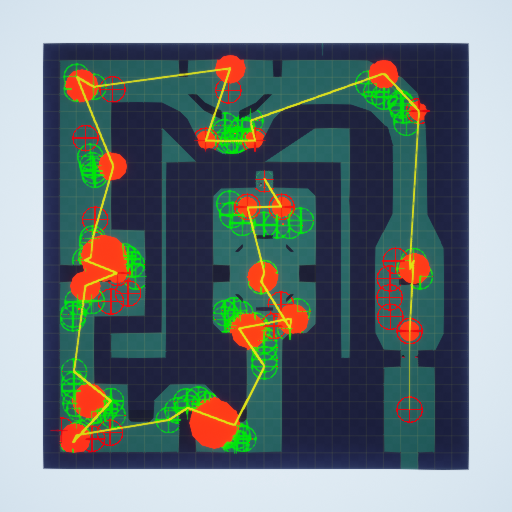
The second iteration shows much more balanced gameplay pacing and helps to show the scale of combat increasing as the player progresses through the level. To help combat the difficulty issues, I changed around the enemy placement meaning that I can now play through the level without dying. It also shows how the previous large block spot on the map has been split up into multiple smaller points scattered throughout that section of the level. By breaking up different elements of the level and spreading them out, it also made the gameplay more enjoyable for me as there was more variation in the way enemies were presented and scenarios were created.
The first room is left empty so that the player has a chance to learn the basic controls of the game before having to put it into action with an enemy encounter; I specifically left the first enemy encounter with only a few enemies to give the player a chance to first understand the mechanics and how two of the three enemies (machine gun and rocket) work before encountering them in multiple different scenarios. The cover also helps to show the player how the rocket enemy attacks before getting into their attack range; their radius is so large that if this wasn't done the player would be shot at before the enemy is actually visible.
For my final iteration, I plan to tweak the design changes that need to be made pertaining to cover for the player in the final section, and also want to refine the level’s design. For the section in the top right, I want to include another enemy to be fought along the corridor to add another point, and potentially add a handful more enemies into the area around the first corner to engage the player more. Another change I will test in the final iteration is adding some more enemies into the very end of the final room, to help give it a larger feeling of one last challenge before the player can finish the level.
FINAL LEVEL ITERATION
To put together the final iteration, I changed out the parts I wanted to tweak in the level and added some extra design features, as well as then going over every object to have them properly aligned to the grid. Even though I originally wanted to give the level a more free-flowing and less rigid design, I feel like it helps to assist the gameplay as the edges of everything are very well-defined to the player, letting them see everything they need to and not affecting their ability to read the level with weirdly designed walls.
After making some of the changes to the design and enemy placement, the telemetry now more accurately reflects the major points in the level, with the final room having the most prominence on the map. I also feel like the sections with no enemies work effectively, as they give the player a chance to take a break from constant action and work to better emphasise the bigger challenges in the level.
Because I feel like my level is at a point where the design itself is complete, I turned my focus to affordance in the level, both with what the camera is showing the player, as well as using meshes to subtly indicate to the player what to do. The first thing I did was play through the level again, properly taking note of what was in view of the camera, and if I was doing anything purely on me already knowing where to go.
AFFORDANCE DESIGN
Based on the way the level is designed as mostly one singular path that spirals in on itself, the player doesn’t really have an opportunity to get lost. For example, when the player begins to move down their view area is a lot smaller than any other direction. So, with some use of affordance meshes in the blockout, I can signal to the player where danger is before they get to it, avoiding them being shot at off screen, taking them by surprise.
The first thing I did was to play through the level and note places that would benefit from using the framework's affordance meshes to help guide the player and signal information to them. The first places I found are these corners, that are big enough that the player can't see around them, and could potentially move blindly into enemies.
One particular area I used meshes to signify what to do to the player is where the path splits for the optional fight with the lightning enemy. Before, when the player reached this section they may become confused on where it is they’re supposed to go. I made use of the utility boxes to act as signposts to show that the bottom area is the less dangerous of the two. I didn’t want to use green trees in this scenario as that would show the area being safe, instead opting to use yellow domes that still show the player that going around is their better option.
For the leadup to the final room, the player can be shot at before they even enter the room and see the enemies. Thus, I needed to make sure that the danger was communicated to the player, but not present it in a way so that the player wouldn’t go into the room at all. Therefore, I decided to only use 2 of the spiky balls to signal at what distance the player would start being shot at.
Full Level Affordance
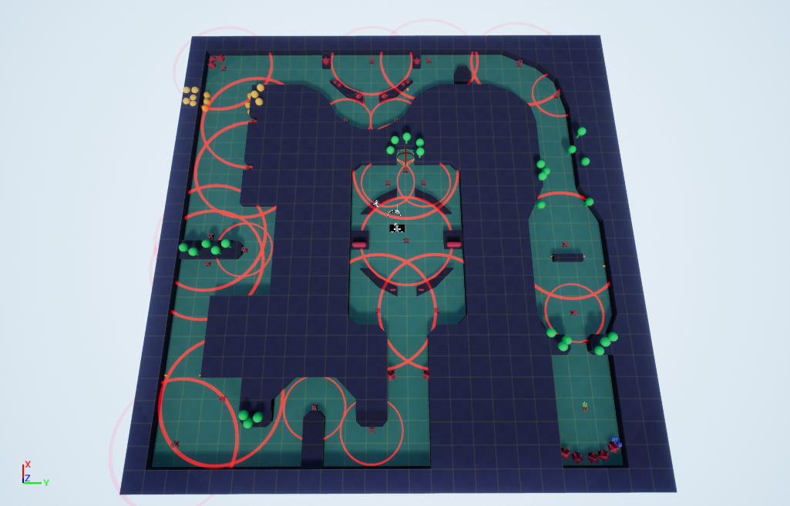Overall, I just used the affordance meshes in specific places to guide the player through specific sections of the level. Because the level itself is a spiral, it means that most of the level is already fairly self-explanatory when it comes to traversal, as there is only one direction the player can go. However, I have used it to highlight specific areas of interest for the player, such as using the spiky balls to communicate the split section to the player, and having them denote the start of the final room.
Because my level is now completed in UE4, I'm now going to create a revised set of bubble maps which has all the gameplay changes I made present in it, and make some maps of the finished product in Photoshop.
BUBBLE MAPS
Iteration 1
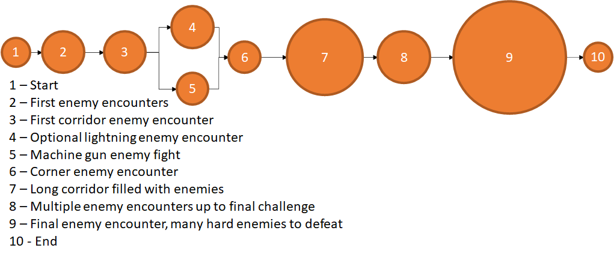Iteration 2
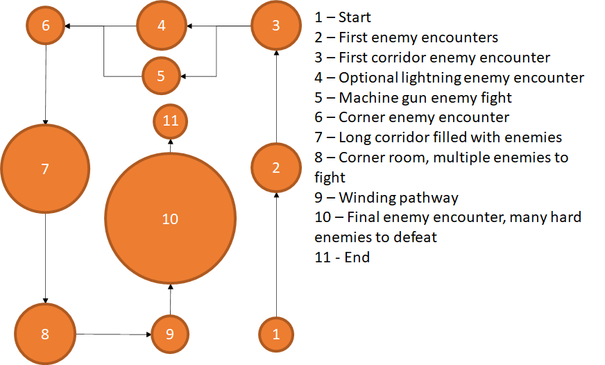Final Iteration
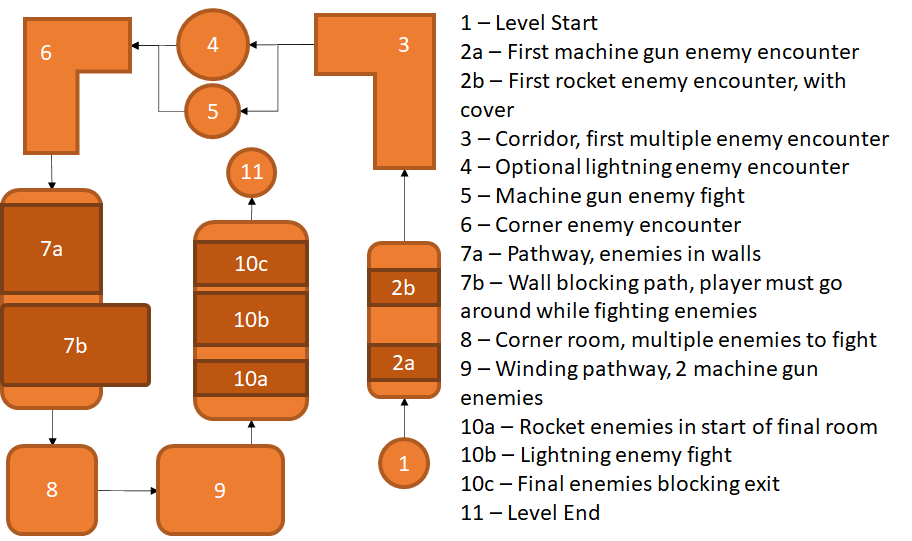Comparing these bubble maps to the original one I made, it shows how the overall design and shape of the level has remained intact, but many changes have been made to improve the way it plays; I also added more detail into individual sections as the level became more fleshed out from my original ideas. The most notable changes have happened in the top section of the level, with that entire section being changed out from the original design to the final version. Some elements of the original design were moved, notably the winding pathway going from the top of the level to the bottom of the level.
LEVEL MAPS
Base Map
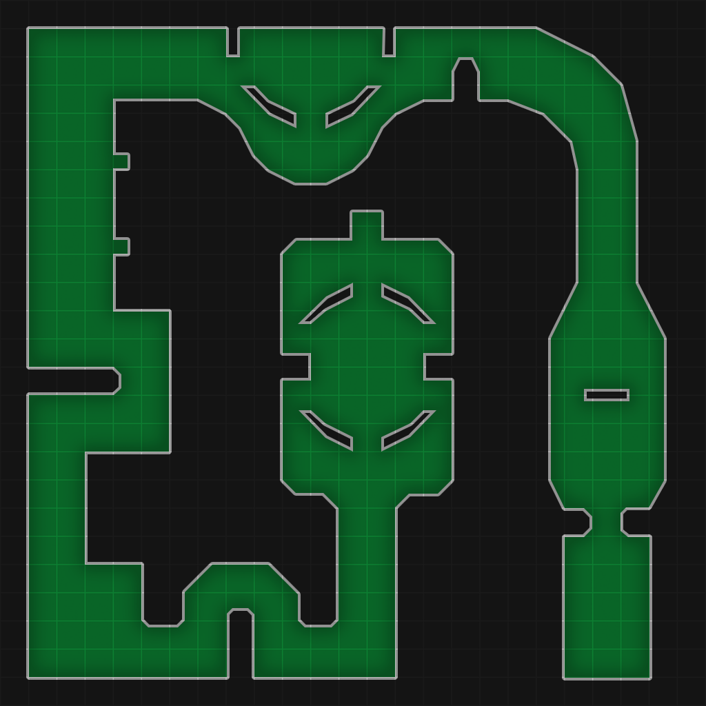Enemies & Critical Path Maps
FINAL LEVEL PLAYTHROUGH VIDEO
Back to Introduction to Games Design Page